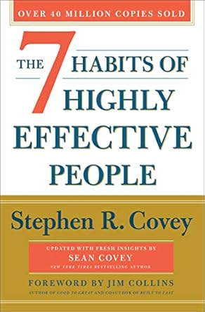
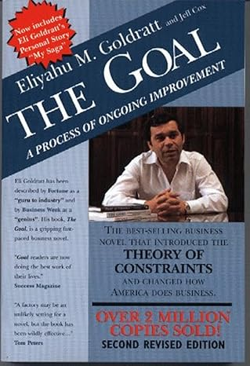
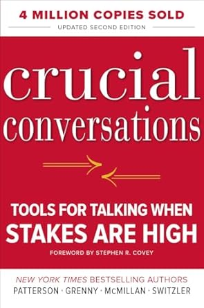
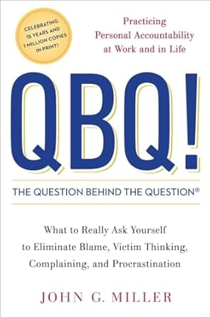

📚 My Library
What the CEO Wants You to Know
Distills the essence of business into four principles—customers, cash generation, return on invested capital, and growth. Helps employees make better decisions and contribute more effectively.

Think and Grow Rich
Outlines 13 principles for achieving success and wealth, emphasizing desire, faith, persistence, and goal-setting.
How to Win Friends and Influence People
Teaches techniques for effective communication, relationship-building, and leadership to improve social skills and influence.

The 7 Habits of Highly Effective People
Presents a principle-centered approach to personal and professional effectiveness through seven transformative habits.
Scrum: The Art of Doing Twice the Work in Half the Time
Introduces Scrum, a framework for team productivity emphasizing iterative progress, collaboration, and adaptability.
The Phoenix Project
A business novel exploring how DevOps can transform IT and drive business success through the story of a struggling IT department.
Accelerate: The Science of Lean Software and DevOps
Reveals key capabilities that drive software delivery performance using DevOps and lean practices based on scientific research.
Critical Chain
Introduces the Critical Chain method of project management through a business novel applying the Theory of Constraints.
It's Not Luck
A sequel to The Goal, applying TOC thinking processes to solve complex business problems in marketing and strategy.

The Goal
A business novel introducing the Theory of Constraints through the story of a plant manager improving productivity.
Good to Great
Explores why some companies transition from good to great, identifying principles like Level 5 Leadership and the Flywheel Effect.
Grit: The Power of Passion and Perseverance
Argues that success is driven more by grit—passion and perseverance—than by talent, and explains how to cultivate it.

Crucial Conversations: Tools for Talking When Stakes Are High
Provides tools for navigating high-stakes conversations with confidence, fostering dialogue and reducing conflict.

QBQ! The Question Behind the Question
Focuses on personal accountability by teaching how to ask better, action-oriented questions to drive change.
Self Unfoldment
A spiritual guide rooted in Vedanta philosophy, offering practical wisdom for self-discovery and transformation.
Ahead in the Cloud
A guide for enterprise leaders navigating digital transformation through cloud computing and cultural shifts.
Men Are from Mars, Women Are from Venus
Explains how men and women differ in communication and emotional needs to improve relationships and reduce conflict.
Superbosses: How Exceptional Leaders Master the Flow of Talent
Profiles leaders who develop top talent by fostering innovation, mentoring, and empowering others.
Leadership Lessons from a UPS Driver
Shares leadership insights from a UPS executive focused on teamwork, humility, and a 'we, not me' culture.